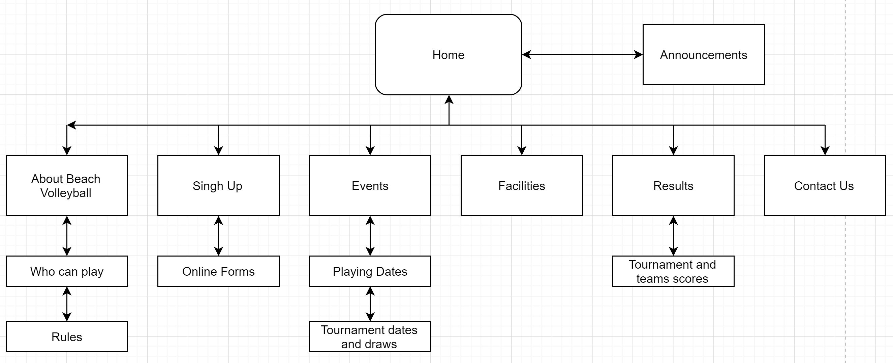

CP1406 - Assignment 1 - Project Plan

Name: Max Edward Dunsmore

Goals

The goal of this website is to produce an increase in customers and spectators by at least 50%. 

Success Evaluation

Success will be achieved if an increase of at least 50% in customers occurs. This will be judges through an increase in; online and over the phone signups, and attendance at games and hiring of facilities.


Target Audience

While the activity is aimed at all ages, this website will be focusing on the younger demographic (15-30-year old’s). This will be achieved through the colour’s chosen; limited wording; and a sleek and easy to use design.

Site Flowchart
 GitHub Repository

https://github.com/MaxDunsmore/CP1406_Assesment_1